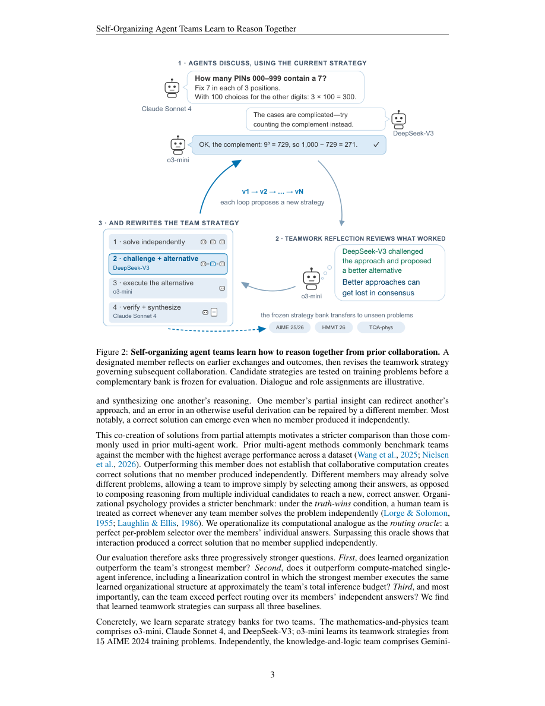

#1
★ 8/10
Self-Organizing Agent Teams Learn to Reason Together
Self-Organizing Agent Teams Learn to Reason Together

图 Figure · Page 3 of paper
🎯 （AI 中文深度分析暂不可用：Anthropic API 额度不足。英文栏为论文原文摘要，下方链接均可正常访问。）
Collective intelligence depends not only on what team members know, but also on how they organize their work
| 维度 | 中文 | English |
|---|---|---|
| ❓ 待解决 的问题 |
（AI 中文深度分析暂不可用：Anthropic API 额度不足。英文栏为论文原文摘要，下方链接均可正常访问。） | Collective intelligence depends not only on what team members know, but also on how they organize their work. When the structure of a solution is unknown, useful roles and divisions of labor cannot be specified in advance; teams must learn from experience how to organize reasoning as it unfolds. Human teams routinely adapt this way, while existing AI agent teams rely on fixed protocols, explicit task decomposition, or routing. We introduce Self-Organizing Agent Teams (SAT), fixed teams of AI agents that learn reusable strategies from prior collaborations to organize roles, conversational phases, participation, and information flow. These strategies enable what we call collaborative computation: agents exchange, challenge, repair, and synthesize partial reasoning into solutions no member produced independently. In two independent settings, we learn teamwork strategies that transfer unchanged to unseen benchmarks, using only 15 mathematics and 25 graduate-level knowledge problems. Across five mathematics and physics benchmarks, self-organizing teams average 66.7% accuracy, versus 48.8% for their strongest member, 58.7% for compute-matched inference by that agent, and 59.0% for a perfect router over members' independent answers; on AIME 2026, they exceed this router by 13.4 points. Because gains vary across benchmarks, we ask when self-organizing collaboration helps. Across eight benchmarks, demonstrability (the organizational-psychology construct of whether a team can distinguish correct from incorrect reasoning) strongly tracks improvement over the strongest member (Spearman $ρ=0.90$, $p=0.005$): teams benefit most when correct reasoning can be recognized once it appears. More broadly, these results suggest that organization itself can become an agent capability: agent teams can learn how to reason together and produce solutions their members could not reach independently. |
| 💡 解决 的亮点 |
（AI 中文深度分析暂不可用：Anthropic API 额度不足。英文栏为论文原文摘要，下方链接均可正常访问。） | See the paper’s original abstract in the "Problem / 背景" row above. |
| 🧪 实验 内容 |
（AI 中文深度分析暂不可用：Anthropic API 额度不足。英文栏为论文原文摘要，下方链接均可正常访问。） | See the paper’s original abstract in the "Problem / 背景" row above. |
| 📊 实验 结果 |
（AI 中文深度分析暂不可用：Anthropic API 额度不足。英文栏为论文原文摘要，下方链接均可正常访问。） | See the paper’s original abstract in the "Problem / 背景" row above. |
| 🏁 结论 | （AI 中文深度分析暂不可用：Anthropic API 额度不足。英文栏为论文原文摘要，下方链接均可正常访问。） | See the paper’s original abstract in the "Problem / 背景" row above. |
| 🔗 论文 链接 |
arXiv: 2609.22682v1 · 📥 PDF | |
⚙️ Method · 方法详解
（AI 中文深度分析暂不可用：Anthropic API 额度不足。英文栏为论文原文摘要，下方链接均可正常访问。）
See the paper’s original abstract in the "Problem / 背景" row above.
🌟 Why It Matters · 为什么重要
（AI 中文深度分析暂不可用：Anthropic API 额度不足。英文栏为论文原文摘要，下方链接均可正常访问。）
See the paper’s original abstract in the "Problem / 背景" row above.